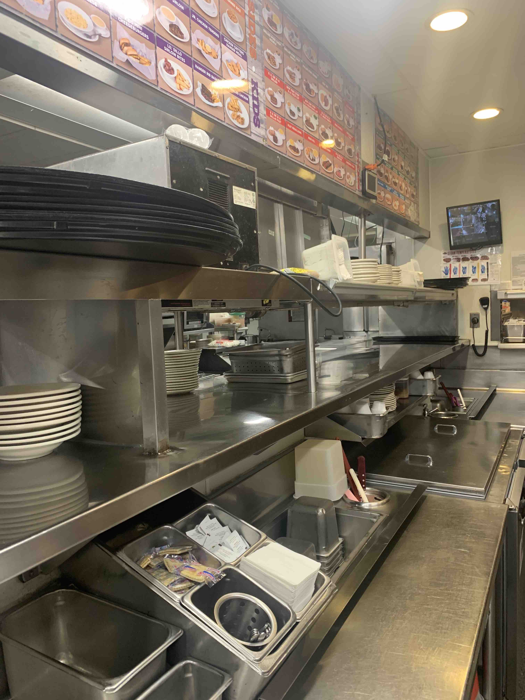
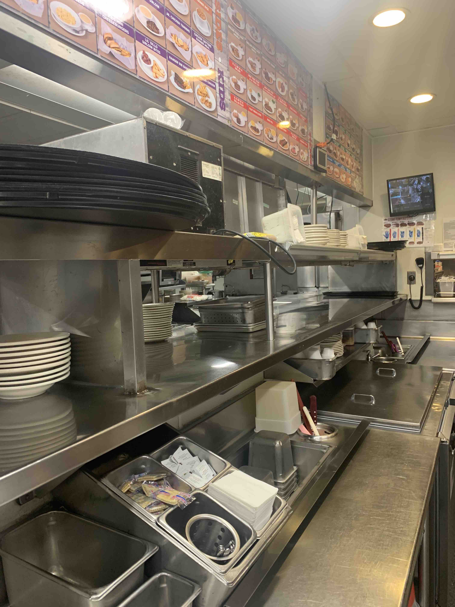
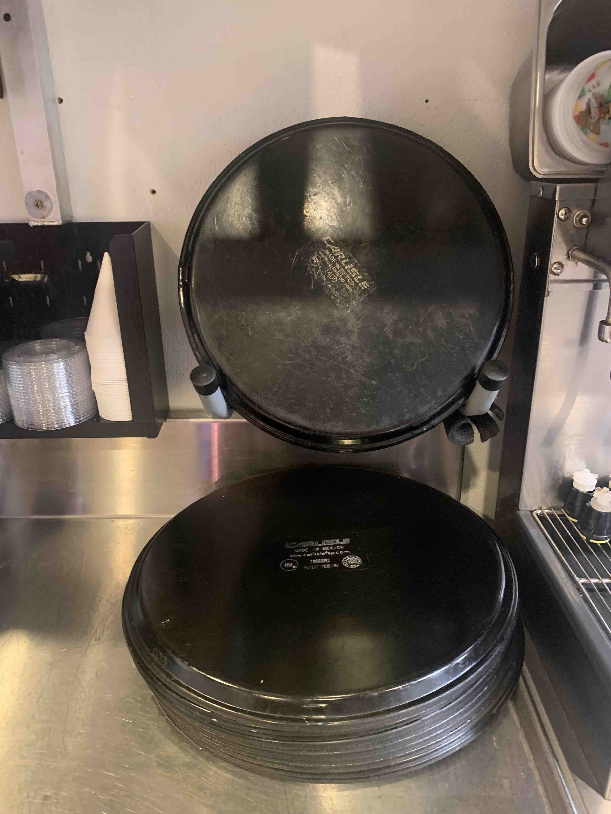

- Use a towel and some spray to clean the trays.
- You need to clean the top and bottom of the large and small trays.
- Make sure you check under the service bar, in to-go, and on the to-go fridge for "surprise" trays
- Neatly stack your trays. Some people stack them upside-down. Currently, I don't believe there is a preference. So do as you wish!
- Here is an example:
